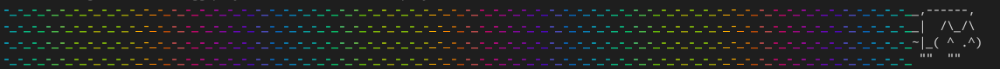

Written on 2021-08-01 by Marek Jędryka
An idea for presenting tests running by CLI and playing sound while testing. Invented to learn new things while having fun.
This is a small article series about running tests, playing sound using node streams, and execute all of this concurrently. The following articles are available now: